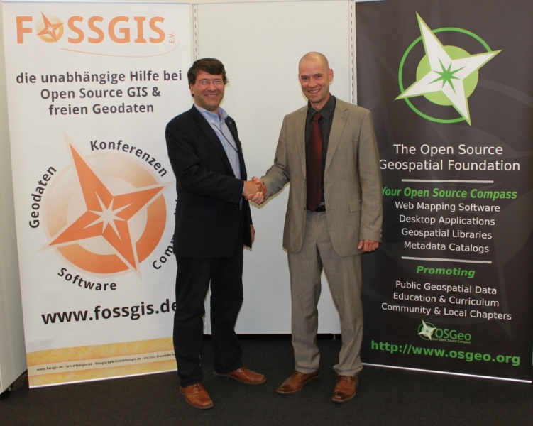
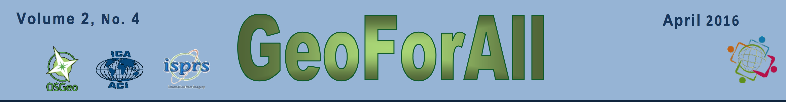
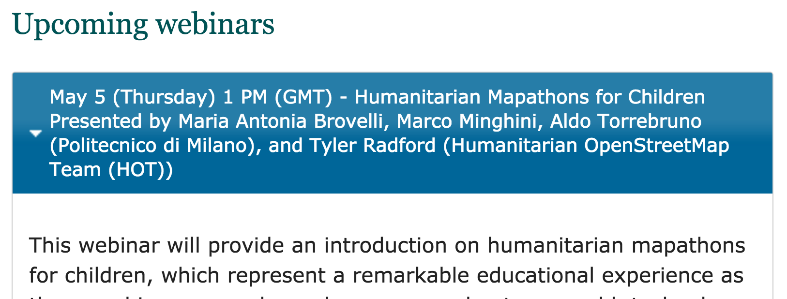
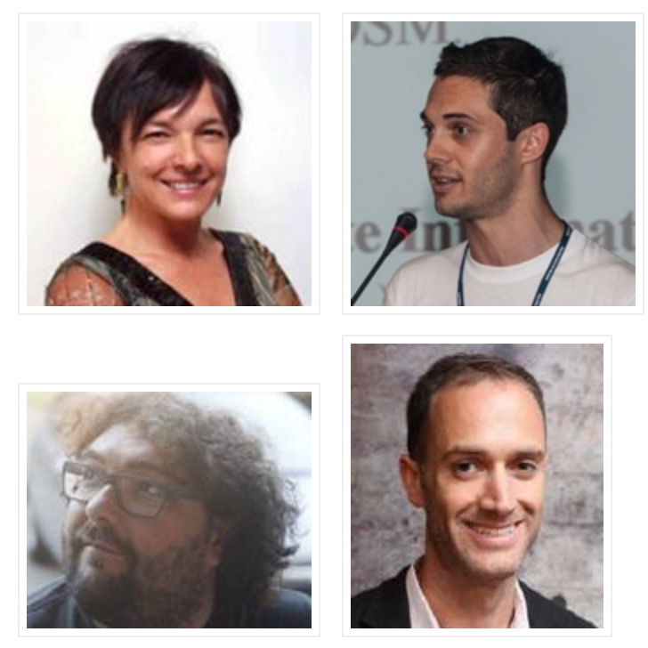
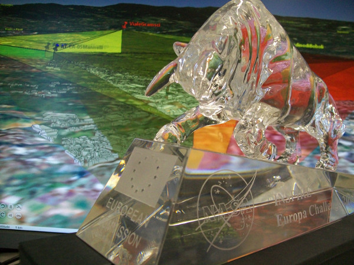
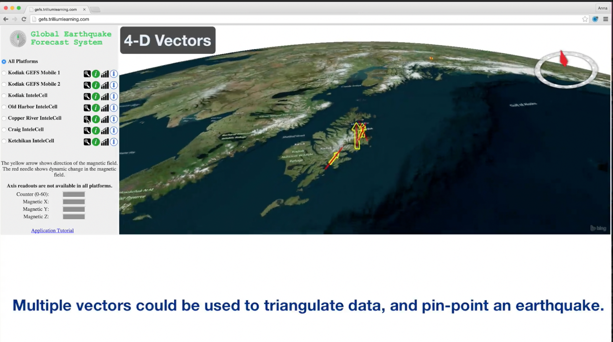
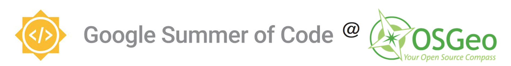
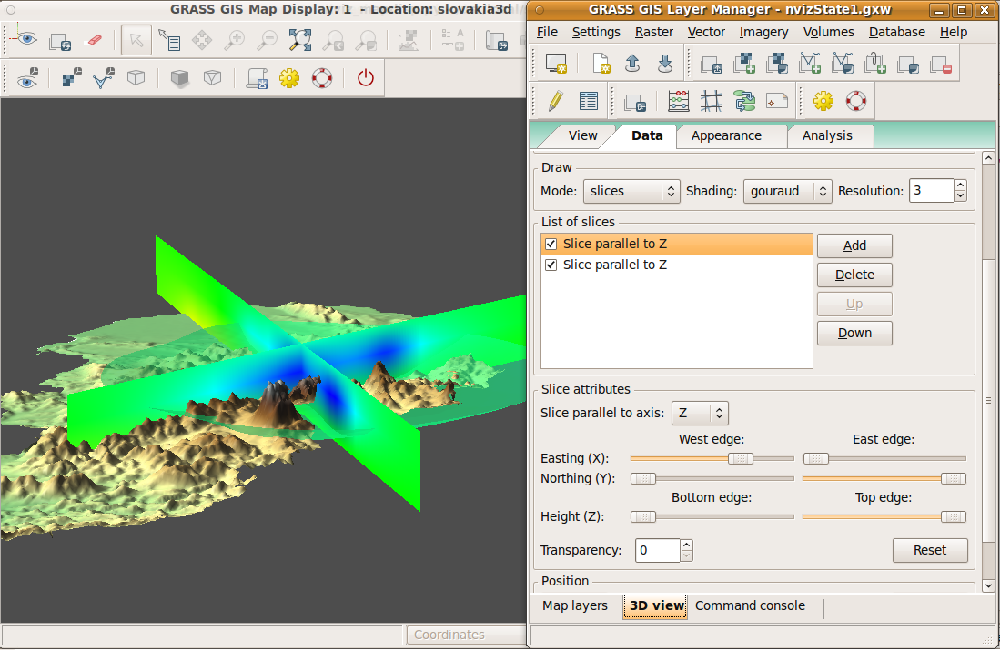
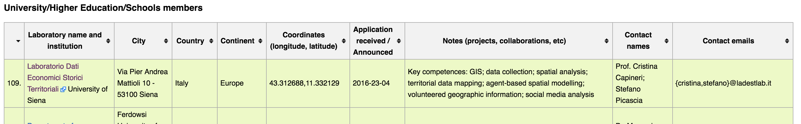
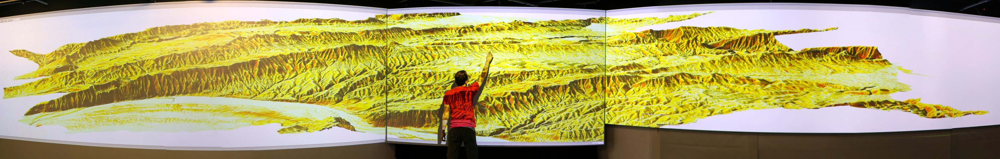

GeoForAll
OSGeo education and research outreach:
How it works and how to join
Helena Mitasova
NCSU
OSGeoREL
at
Center for Geospatial Analytics
with contributions by Suchith Anand, Venkatesh Raghavan, Maria Brovelli and the Geo for all community
Who we are
Global network of academic research and education laboratories and government/industry partners
What is our mission
Making geospatial education and opportunities accessible to all
What are our goals
- Create research and teaching opportunities in open geospatial science
- Build global open access teaching and research infrastructure
- Establish collaborations between academia, government and industry around open geospatial science and education
How it started
Founded in 2011: MoU between OSGeo and the International Cartographic Association (ICA)



Georg Gartner and Arnulf Christl, renewal in 2015 with Jeff McKenna
More MoUs coming
International Society for Photogrammetry and Remote Sensing (ISPRS) MoU signed in 2014.


Georg Gartner, Jeff McKenna and Chen Jun
University Consortium for GIScience (UCGIS) to be signed in 2016
Map of the labs 2012
10 labs in 2012

Map of the labs 2016
over 100 labs globaly in 2016

Organization
Global chair: Suchith Anand
- regional chairs for each continent:
contact persons for new members - advisory board: OSGeo, ICA, ISPRS presidents,
and academic leaders - 100+ lab directors


Newsletter
- chief editor Nikos Lambrinos,
Aristotle Univ. of Thessaloniki, Greece - monthly highlights of activities, lab of the month
- events, conferences, webinars, courses, workshops
- funding, scholarships, exchange programs
- ideas, social contributions

http://www.geoforall.org/newsletters/
Education and research
- develop open access shared educational material based on FOSS4G (not limited to OSGeo projects)
- develop/contribute to open geospatial software, data
- organize/participate in community sprints

Educator of the year award: Geoacademy team, fossgeo.org
OSGeo Educational Content Inventory http://www.osgeo.org/educational_content
Webinars
http://www.geoforall.org/webinars/
Interested to present? Contact Rafael.Moreno@ucdenver.edu
 
Conferences
- academic sessions at the global FOSS4G
- contribute to open geospatial sessions at major scientific conferences (ISPRS, AGU, EGU, ...)
- best student paper awards by OSGeo, ICA, ISPRS
More activities
- Thematic initiatives:
- OpenCity smart
- AgriGIS
- CitizenScience
- K-12 education, colaboration with mapstory.org
- NASA World-Wind Europa challenge
 
2015 winner: Trillium Learning, Kodiak Island Borough School District, Alaska
Google Summer of Code
- OSGeo umbrella for OSGeo software and guest geospatial projects
- 22 students accepted in 2016

https://wiki.osgeo.org/wiki/Google_Summer_of_Code_2016_Ideas
Google Summer of Code
Project by Anna Petrasova, at CTU, Prague in 2011- https://grasswiki.osgeo.org/wiki/WxNviz_GSoC_2011
- now PhD student at NCSU lab
- lead developer of Tangible Landscape
- GSoC student in 2014 and mentor in 2016


Geospatial FOSS at NCSU
NCSU OSGeo Research and Education Laboratory: https://geospatial.ncsu.edu/osgeorel- course development using Geospatial FOSS
- research projects
- active participation in OSGeo projects

Course material
- Freely and openly available online
geospatial.ncsu.edu/osgeorel - Managed in GitHub for revision control and collaboration
- Format: HTML/HTML5, License: CC BY-SA
- registered in OSGeo Educational Content Inventory

Tangible Landscape
Tangible interface for GRASS GIS

Book: Petrasova, A., Harmon, B., Petras, V., Mitasova, H. Tangible Modeling with Open Source GIS, Springer International Publishing, 2015.
Tangible Landscape
see more videos at NCSU OSGeo REL YouTube channel
Where to find more info
Website http://www.geoforall.org
Mailing lists: Global and regional

Where to find member labs
Wiki http://wiki.osgeo.org/wiki/Edu_current_initiatives
- member table with links to labs
- Newsletter: lab of the month
- education and research topics
- one slide lab info in geo for all presentations
- see slides #33-53
http://www.slideshare.net/mariabrovelli/geoforall-a-successful-osgeo-initiative
- see slides #33-53

How to participate
Three types of participation:
- members of the global network: academic labs
- partners from industry/government/nonprofit partner
- international professional organizations through MoUs
How to join
http://www.geoforall.org/how_to_join/
- read the criteria
- if you fulfill the criteria, contact a regional chair, describe your open source geospatial activities
- if invited:
- register at OSGeo wiki
- create entry for your lab in the wiki table
- join the mailing list
- list your research and edu interests
- participate - see http://wiki.osgeo.org/wiki/Geoforall_criteria
How to become a partner
http://www.geoforall.org/how_to_join/
- read the criteria for the labs
- contact a regional chair, describe your interests in partnering with geo for all labs
- if invited:
- register at OSGeo wiki
- create entry for your instituition in the wiki table
- join the mailing list
- list your research and edu interests
- participate - see http://wiki.osgeo.org/wiki/Geoforall_criteria
What are the benefits of joining Geo for All?
You are asking the wrong question, your should ask
How can I contribute?
Thank you !
Questions?
